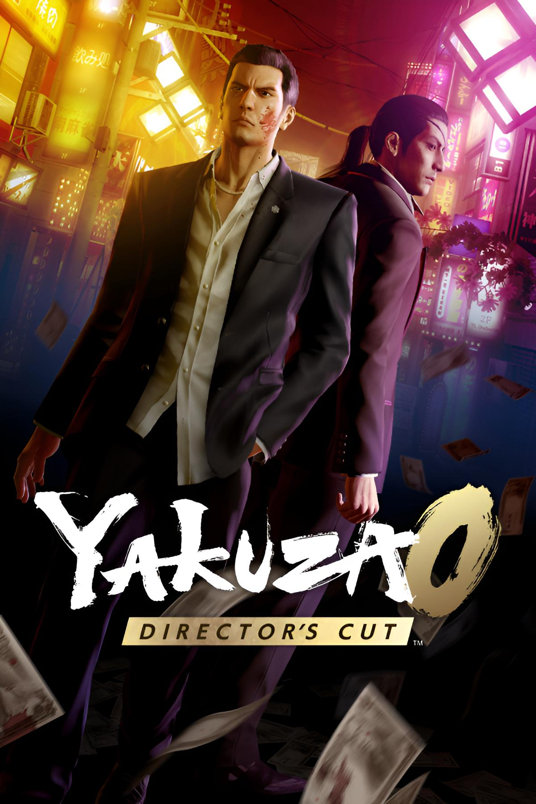
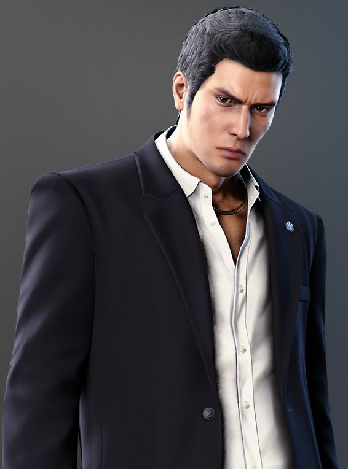
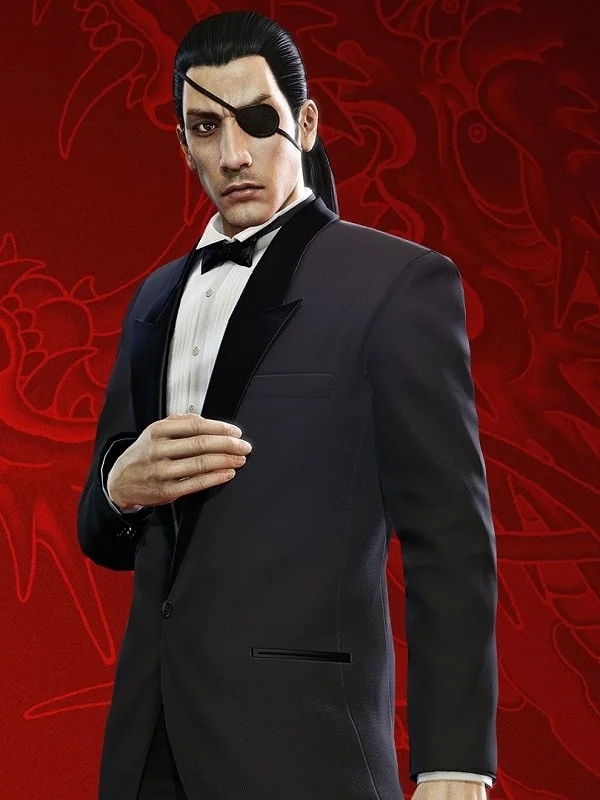

historia

Yakuza 0 es una precuela de acción y aventura ambientada en el Japón de 1988 (época de la burbuja económica), que narra los orígenes de Kazuma Kiryu y Goro Majima. Mezcla una trama criminal dramática y seria con combates beat 'em up intensos y un sinfín de minijuegos y actividades secundarias absurdas en los distritos de Tokio y Osaka.
Esta ambientado en diciembre de 1988 durante la burbuja económica japonesa, narra los orígenes de Kazuma Kiryu y Goro Majima. Kiryu, un joven yakuza de la familia Dojima en Kamurocho, es inculpado por un asesinato en un misterioso "lote baldío", mientras Majima busca redimirse en Sotenbori. Ambos se ven envueltos en una conspiración por el control de dicho terreno.
Lo mejor de el juego
- Historia y Personajes: Considerada de las mejores de la saga
- Combate Dinámico: Incluye múltiples estilos de lucha para cada personaje
- Contraste de Tono (Drama/Comedia)
- Actividades Secundarias
¿Quienes son nuestros protagonisas?

Kazuma Kiryu
Kazuma Kiryu es el icónico protagonista principal de la saga de videojuegos de acción Yakuza / Like a Dragon de SEGA. Conocido como el "Dragón de Dojima" por su tatuaje y fuerza, es un ex-yakuza legendario respetado por su estricto código de honor, justicia y protección a los indefensos.
-
Rol en la saga: Protagonista principal en Yakuza 0-6 y figura clave en entregas posteriores (como Gaiden y Like a Dragon 8).
-
Trasfondo: Creció en un orfanato y ascendió en la Familia Dojima del Clan Tojo, llegando a ser su cuarto presidente.
-
Personalidad: A pesar de su pasado violento, es bondadoso, noble y actúa como figura paterna para muchos, especialmente en el orfanato Morning Glory que gestionó.
-
Apodos: El Dragón de Dojima, Dragón Legendario, Joryu (nombre en clave).
-
Estilo de lucha: Conocido por su estilo directo, "Dragon of Dojima", que utiliza técnicas de lucha callejera y fuerza bruta.
Goro Majima
Goro Majima es uno de los personajes principales y más icónicos de la saga de videojuegos Like a Dragon (anteriormente Yakuza), reconocido como el "Perro Loco de Shimano". Es un ejecutivo del Clan Tojo, caracterizado por su personalidad caótica, impredecible y violenta, aunque a menudo actúa como antihéroe y aliado clave del protagonista Kazuma Kiryu.

Historia
Yakuza 0 esta ambientado en diciembre de 1988 durante la burbuja económica japonesa, narra los orígenes de Kazuma Kiryu y Goro Majima. Kiryu, un joven yakuza de la familia Dojima en Kamurocho, es inculpado por un asesinato en un misterioso "lote baldío", mientras Majima busca redimirse en Sotenbori. Ambos se ven envueltos en una conspiración por el control de dicho terreno.